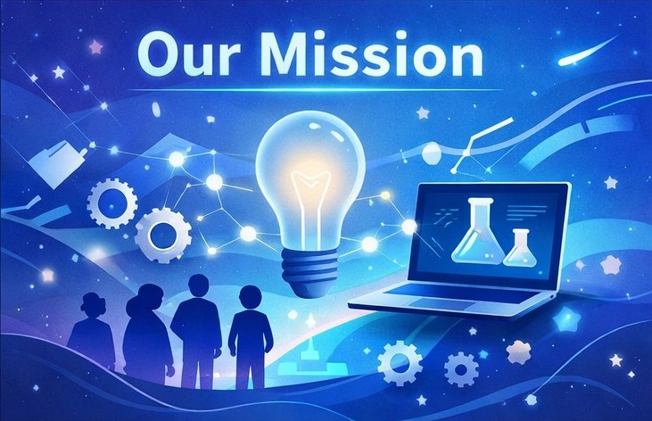
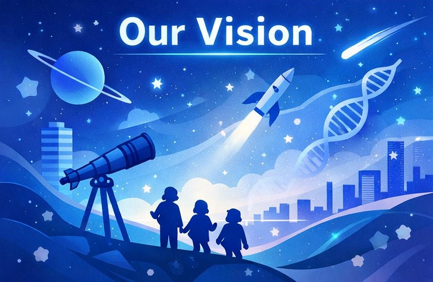
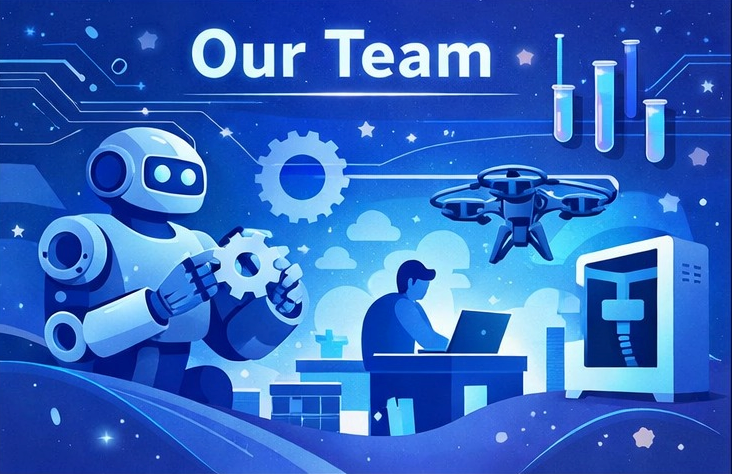

About STEMxFuture
Our Mission

At STEMxFuture, our mission is to empower young minds by making high-quality STEM education accessible to all.
We are a global student-led organization dedicated to breaking down barriers and creating opportunities for
students to explore science, technology, engineering, and mathematics with confidence and curiosity.
We strive to remove barriers that prevent students from exploring science, technology,
engineering, and mathematics, regardless of their background or location.
Through thoughtfully crafted educational content, collaborative initiatives, and student-led innovation,
we aim to cultivate curiosity, critical thinking, and confidence. We believe that when students are given
the right tools and opportunities, they do not just learn — they lead, create, and inspire change.
Our Vision

We envision a future where every student, regardless of socioeconomic status, geography, or access to resources, can confidently explore and engage with STEM disciplines. Our vision is a world where curiosity is encouraged, innovation is nurtured, and young individuals are empowered to solve real-world problems. By fostering a culture of collaboration, inclusivity, and intellectual growth, we aim to contribute to a generation that is not only academically prepared but also globally aware and impact-driven
Our Team

Our team consists of passionate and dedicated student volunteers who share a common goal: expanding access to meaningful STEM education. Each member of our team contributes their time, creativity, and expertise to develop engaging and accessible content. From blog writing and research to educational design and outreach, our volunteers work collaboratively to ensure that our content remains accurate, inspiring, and impactful.
Our team consists of passionate and dedicated student volunteers who share a common goal: expanding access to meaningful STEM education. Each member of our team contributes their time, creativity, and expertise to develop engaging and accessible content. From blog writing and research to educational design and outreach, our volunteers work collaboratively to ensure that our content remains accurate, inspiring, and impactful. At STEMxFuture, we are more than a team — we are a growing community of young leaders committed to educational equity and innovation.
What We Do For You?
We believe that education is a fundamental right, not a privilege. Yet many students around the world still
face limited access to high-quality STEM resources and structured learning opportunities.
To bridge this gap, STEMxFuture delivers carefully researched, thoughtfully written STEM-focused educational content
through a structured, volunteer-driven content ecosystem.
Within our content community, volunteers are encouraged to explore and write about STEM topics aligned with their
personal interests and academic strengths. We do not assign rigid topics; instead, we value intellectual autonomy and curiosity-driven contribution.
However, to maintain consistency and impact, we uphold clear contribution standards. Active contributors are encouraged to maintain consistent weekly output.